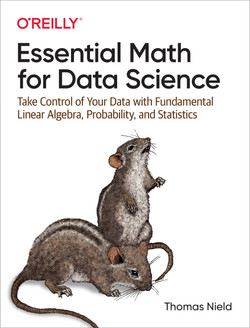

Foundation Mathematics & Statistics
Prerequisites

Before starting this module make sure you have:
access to the book Nield, T. (2022). Essential Math for Data Science. O’Reilly Media, Inc.
a data science environment setup
In case you have not yet set up your environment you can use online notebook services like Google Colab or JupyterLab or Replit
Purpose
The general learning outcome of this course is:
The student is able to perform a well-defined task independently in a relatively clearly arranged situation, or is able to perform in a complex and unpredictable situation under supervision.
After studying this course, you should be able to understand and apply:
The basics of math and calculus
The principles of Probability Theory
The basic principles of descriptive and inferential statistics
Python or other data science script languages.
Content
The course will cover the following topics.
In weeks 1 and 2 you’ll be learning the following topics (sections marked with 🤔 contain assignments):
In week 3 you’ll learn basic probability theory.
In week 4 you’ll learn to uncover underlying patterns and trends utilizing descriptive statistics.
In week 5 you’ll learn to discover basic patterns and trends using inferential statistics.